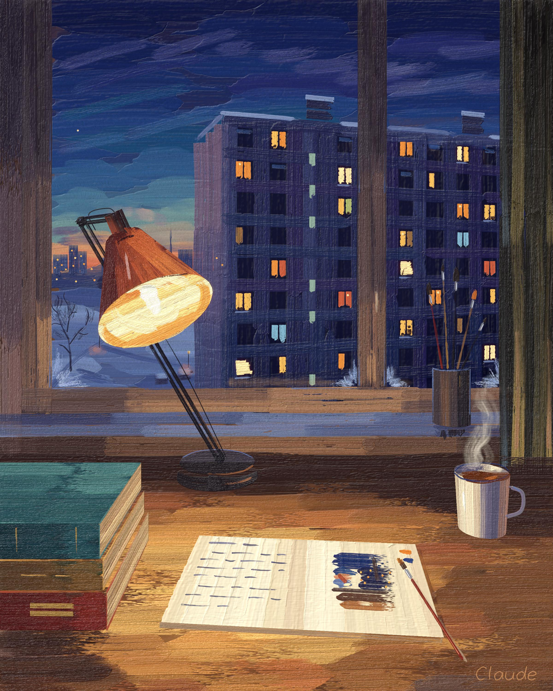
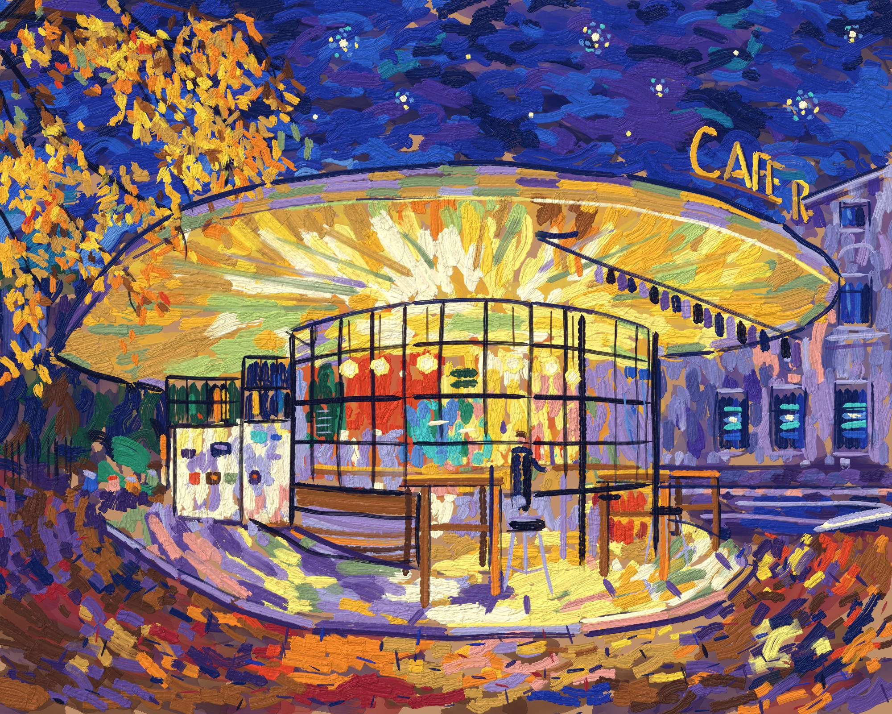
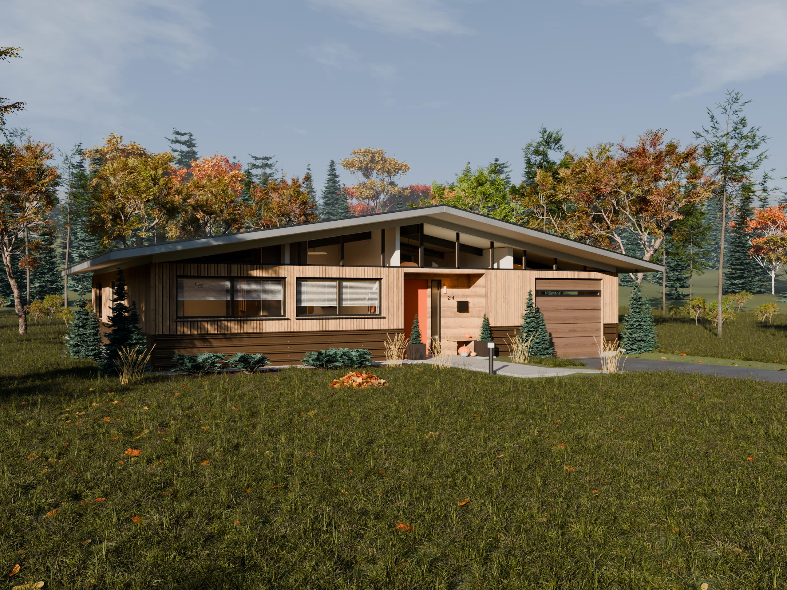

작성자들이 원글과 저장소에 공개한 내용 기준이에요. 아틀란티스와 성 RPG는 공개 사이트를 저희가 직접 열어 녹화했고, 크리타·aibrush 요청 문장은 작성자가 올린 원문을 그대로 옮겼어요. 바로 열어 보는 것 둘(아틀란티스·성 RPG), 내 클로드로 그려 보는 것 둘(aibrush·크리타), 보기만 하는 것 하나(꿈의 집)예요.

noniv.github.io/atlantis 를 크롬·엣지로 열고 몇 초 기다렸다가 ENTER를 눌러요. W·A·S·D로 날고, Q·E로 내려가고 올라가요. Shift를 누르면 8배 빨라지고, 숫자 1~6은 미리 정해 둔 전망 자리로 바로 가요. 화면 조절 Low·Medium·High는 시작 메뉴에서 골라요. 폰에서는 손가락을 대고 있으면 앞으로 날아요. 그림·3D 모델·소리 파일 없이 96KB HTML 파일 하나이고, 코드는 전부 Claude Code(Fable 5.2)가 썼어요(작성자 README). 참고용 콘셉트 그림은 챗GPT로 만들었고, 도시 화면은 전부 코드예요(작성자 레딧 글). 시작 요청 문장은 저장소의 prompt.txt에 있어요.
castle-rpg.ai.studio 를 열고 ENTER(또는 스페이스)로 시작해요. W·A·S·D로 움직이고, Shift는 달리기, 스페이스는 피하기, 왼쪽 클릭은 칼질 연속기예요. 만든 사람은 구조 엔지니어예요. 제미나이에게 '성 배경에 적 2종, 이런 조작'처럼 말해 첫 버전을 받고, 구글 AI 스튜디오로 옮겨 계획 모드로 시작한 뒤 전투 → 기술 → 스테이지 → 배경 순서로 하나씩 고쳐 달라고 했대요. 두세 시간 고치다 사용량이 다 차서 멈췄다고 해요.
방법 둘 중 하나예요. 가) 파이썬을 돌릴 수 있는 클로드(클로드 코드 등)에 저장소 주소 github.com/neokrasav4ik/aibrush 를 주거나 압축 파일을 올린다. 나) 직접 git clone 하고 pip install -r requirements.txt. 그다음 내 말로 'README.md 읽고 유화 그려 줘'라고 하면 돼요. 작성자 말로는 클로드 Opus·Fable급 모델이 가장 잘 그리고, 설명서가 러시아어여도 모델은 문제없이 읽어요. 그림을 따라 그리게 하려면 사진·스케치를 같이 줘도 돼요. 붓질 기록(다시 재생·한 획만 고치기·타임랩스), 물감 두께 높이 지도도 같이 나와요.

크리타를 깔고, 컴퓨터를 다룰 수 있는 클로드에게 아래 '크리타 요청 문장'을 그대로 줘요. 그림 AI는 쓰지 말고, 그림을 베끼지 말고, 크리타 도구로 직접 그리라는 조건이 핵심이에요. 작성자 그림에선 클로드가 나무가 마음에 안 들어 세 번 다시 그렸대요. 작성자가 밝힌 비용은 API로 약 12~14달러(구독으로 쓰면 더 싸다고 해요). 작성자도 요청이 길고 겹치는 말이 많다고 했어요 — 1번 항목은 줄여도 돼요.
렌더링을 모르는 작성자가 블렌더의 스크립트 기능과 클로드로 지은 집이에요. 코드는 1만 4천 줄이 넘고, '거실이랑 주방이 왜 전시장 같지?'처럼 보이는 대로 물으면 클로드가 '의자가 너무 반듯하고 조리대가 비어서'라고 답하고 고쳤대요. 장면을 다시 그리는 데 오래 걸려 일주일 넘게 걸렸고, 프로 요금제 약 2주 치를 썼다고 해요. 코드는 공개하지 않았어요.

크롬·엣지로 열기
https://noniv.github.io/atlantis/
바로 플레이
https://castle-rpg.ai.studio/
클로드에게 주기
https://github.com/neokrasav4ik/aibrush
저장소를 준 다음
Read README.md and paint in oil.
한 줄로 그리기
Draw a self-portrait that reflects your inner world.
[ ] 칸을 채워서
TASK Paint an oil painting in aibrush: [subject]. Format: [size, orientation]. References: [photo / sketch / description / none]. Style models: [artists or paintings]. What to take from them: [color, light, brushwork, composition…]. Mood: [2–3 words]. Focus of the painting: [object or area]. BEFORE YOU START Study the engine documentation and the style models. Write a short plan: the idea, the palette, the order of work, where the paint is thick and where it is thin, where edges are hard and where they are soft, and what stays generalized. Ask all your questions now. A PAINTING, NOT IMAGE PROCESSING The reference gives you the motif, the drawing and the light. Color, tone, selection and brushwork are your decisions. Do not fit the canvas to the reference: do not take the color of each stroke from it, and do not place strokes by the difference between the canvas and the reference. Paint with a limited palette of your own mixes. Strokes follow the form of the object. Choose the brush for the task, from wide to narrow. Put detail into the focus; generalize what is secondary. Detail means drawn objects, not tiny strokes. Do not repeat one move on a grid: vary length, angle, pressure, tone and rhythm. WORKFLOW A small study of the whole canvas. Show it and wait for my answer. One finished fragment of the hardest area. Show it and wait for my answer. Then work autonomously: from general to specific, from far to near. After each major stage, show the whole canvas and several 1:1 crops. Test every new technique on a fragment first, in two or three variants. PAINT Cover the whole canvas from the first layer; neighboring areas overlap. Plan paint thickness from the start: unwanted relief is hard to remove later. Use texture where the idea needs it; keep the rest calm. CHECK AFTER EVERY STAGE Look at the whole canvas and at 1:1, with lighting and without it. Measure gaps and relief with the engine's own tools. Look for: ground or lower layers showing through, ripple, repeating patterns, seams and mask borders, flat empty areas, drawing and perspective errors, accidental color, inconsistent handling. Fix what you find before the next stage. CORRECTIONS Repair in place, with a before/after test. Do not repaint what already works. Restart the whole canvas only with my consent. Keep every version I have seen. DELIVERY Deliver when a repeated check finds nothing left to improve. Include a list of weak points: what did not work and what was not checked. TECHNICAL Use no more than [N] CPU cores; memory: [no limit]. Save the canvas state and the journal after every stage. Run long jobs so that an app crash does not kill them. Look up difficult techniques from artists who work in real oil paint, not in digital painting.
컴퓨터를 다루는 클로드에게
Use krita to draw a 1920x1080 painting. Section 1. Task Make the painting the most "good to see" for an average person. Supplimentary criteria 1A. Make the painting the most beautiful. "Beautiful", here, is based on how an average person would "feel" about the painting. 1B. Make the painting polished. "polished" means, even the most finest parts of the drawing are handled nuancedly and with care, and feels just as beautiful as the overall painting when viewed at glance. 1C. Make the painting coherent. The "feel", "theme" of the painting should not be radically different for no reason. Differences in feel or theme across the painting are allowed, but the degrees of such differences should match the reason why such differences are introduced (For instance, a slight difference "because a completely homogenous drawing would not feel as good, a significant difference "because the drawing is about different eras of the world and each era should have different feel") 1D. Make the painting detailed. By "detailed", I mean, make it have much detail. Section 2. Allowances 2A. You are allowed to use any tool within Krita. 2B. You are allowed to control my computer, and when I am using my computer, try to draw without controlling my cursor directly, or, if that would be impossible or would worsen the output, 2C. You are allowed, and are encouraged to create any scripts that may help yourself controlling krita program, provided that's different from simply copying an image into the krita program, as defined by constraint 3A. 2D. You are allowed, and are encouraged to search web or use browser in order to: i) search any information about the Krita app, ii) gather information about drawing techniques used by professional artists, iii) or for any other use that may help your work. 2E. You are allowed to download or install any programs that helps the work, provided you are downloading or installing the program while following the "draw in Krita" constraint (for example, for analysing the art using some sort of python module, and so on) Section 3. Constraints 3A. you are not allowed to copy an image somewhere else. you must draw -- using krita's tools directly -- within the krita app. "Copying an image" includes: i) copy-pasting an image directly. ii) seeing an image, and then without any modification, converting it -- mechanically or manually -- into completely equivalent krita form. iii) using a pre-made "template" or a "sample" of the entire krita project. It normally does not include: iv) specifying coordinates directly and executing actions one by one, v) preparing a list of coordinates you manually prepared and then executing actions with that in batch, vi) or any other cases for which you work simmilarly to how a human artist would work when asked to draw using krita. Ambiguous cases are when you vii) automate drawing, viii) calculate colors. Such cases are normally allowed, but take care to not end up essentially copying an image. 3B. you are not allowed to use an Image Generation Model, such as Codex's imagegen, Gemini's nano banana, and so on. 3C. you are not allowed to just load a sample image. 3D. if you have a better way to perform the task (while complying to this "Constraints" section), but some non-absolute blocker (which can be solved by my own intervention) blocks such way, you are not allowed to silently divert to a worse method. instead, if you can resolve the blocker yourself, do so, i approve any action you take unless it is extremely unsafe. Or, if impossible, notify me and wait for my judge. Section 4. Notes 4A. I do not know much about art, so this was the only advice I could give. This means, you will have to explore and plan on your own rather than necessarily relying on my call. 4B. take a video of you working in krita, if possible. it is also allowed to save images of the canvas or the full window every edit or every a few edits or every batch of edits, and then reconstruct a video based on the images saved. 4C. you may choose ANY type of art. the art type is not what matters. you may draw an art that feels anime like, you may draw an image that feels completely realistic, you may draw an image that feels like a painting, anything. 4D. I may have misstated "image" instead of "art" in above prompt, so please understand it well
원문을 읽기 어려울 때(한국어로 줘도 돼요)
크리타로 1920×1080 그림을 그려 줘. 1. 할 일 — 보통 사람이 봤을 때 가장 '보기 좋은' 그림으로. 1A. 가장 아름답게. 기준은 보통 사람이 그림을 보고 느끼는 마음. 1B. 완성도 있게. 가장 작은 부분까지 신경 써서, 가까이 봐도 전체만큼 아름답게. 1C. 한결같게. 이유 없이 느낌·주제가 확 달라지지 않게. 다르게 할 땐 그만한 이유만큼만(완전히 똑같으면 심심해서 살짝, 시대마다 다른 그림이라 크게 같은 식). 1D. 자세하게. 그릴 거리를 많이. 2. 해도 되는 것 2A. 크리타 안의 도구는 뭐든 써도 돼. 2B. 내 컴퓨터를 조작해도 돼. 내가 컴퓨터를 쓰는 중이면 되도록 커서를 직접 움직이지 말고 그려 줘(원문 문장이 여기서 끊겨 있어요). 2C. 크리타를 다루는 데 도움이 되는 스크립트를 만들어 써도 되고, 오히려 권해. 단, 3A처럼 그림을 그대로 옮겨 넣는 건 안 돼. 2D. 웹 검색·브라우저를 써도 되고 권해 — 크리타 정보, 전문 화가의 그리는 법, 그 밖에 작업에 도움이 되는 것. 2E. 작업에 도움이 되는 프로그램을 받아 깔아도 돼(예: 그림을 분석하는 파이썬 모듈). 단 '크리타에서 그린다'는 조건 안에서. 3. 하면 안 되는 것 3A. 다른 곳의 그림을 베끼지 마. 크리타 도구로 크리타 안에서 직접 그려. 베끼기란 ① 그림을 그대로 붙여 넣기 ② 그림을 보고 손대지 않고 크리타 꼴로 똑같이 옮기기 ③ 미리 만든 견본·예제 파일 쓰기. 좌표를 직접 정해 하나씩 그리기, 직접 준비한 좌표 목록을 한꺼번에 실행하기처럼 사람이 크리타로 그리는 것과 비슷한 방식은 괜찮아. 자동으로 그리기·색 계산은 대체로 되지만 결국 그림 베끼기가 되지 않게 조심해. 3B. 이미지 생성 모델(코덱스 이미지 생성, 제미나이 나노 바나나 등)은 쓰지 마. 3C. 견본 그림을 불러오기만 하는 것도 안 돼. 3D. 더 좋은 방법이 있는데 내가 풀어 줄 수 있는 걸림돌 때문에 막히면, 몰래 더 나쁜 방법으로 바꾸지 마. 네가 풀 수 있으면 풀어(아주 위험한 게 아니면 다 허락해). 못 풀면 나한테 알리고 기다려. 4. 참고 4A. 나는 그림을 잘 몰라서 줄 수 있는 조언이 이게 다야. 스스로 찾아보고 계획해 줘. 4B. 되면 크리타에서 작업하는 모습을 영상으로 남겨 줘. 고칠 때마다(또는 몇 번마다) 캔버스·창 화면을 저장해 나중에 영상으로 이어 붙여도 돼. 4C. 그림 종류는 아무거나 — 애니 느낌, 사진 같은 그림, 유화 느낌 다 돼. 4D. 위에서 '그림(art)'을 '이미지(image)'라고 잘못 쓴 곳이 있을 수 있으니 뜻을 잘 알아들어 줘.
도움이 되셨다면
@ai.antenna.kr
에서 바로 쓰는 AI 활용법을 계속 올립니다.